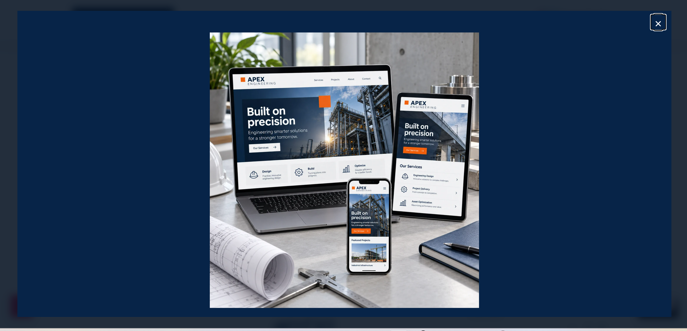
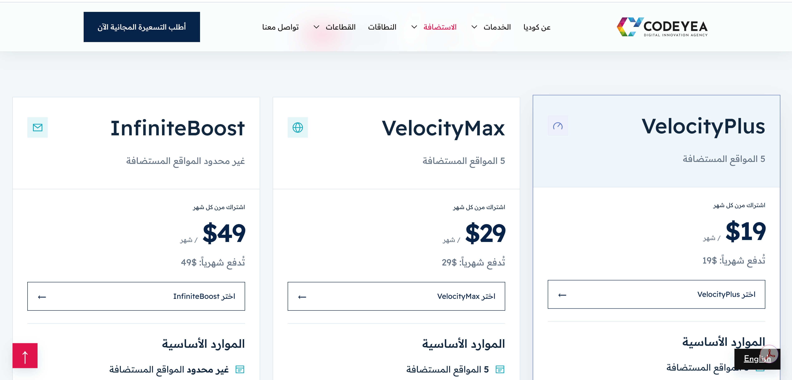
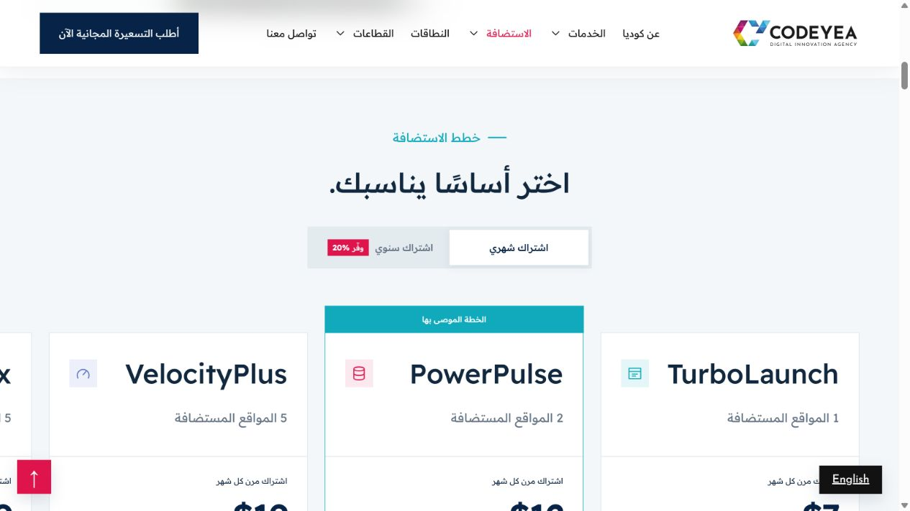

المرجع هو لقطة المالك، والتنفيذ لقطة من النسخة المنشورة على الرابط الرئيسي. تختلف أبعاد نافذة المتصفح بين اللقطتين؛ المقارنة لتقييم التغيير وليست ادعاء تطابق بكسلات.
نافذة الصور والشرح
المرجع قبل التصحيح

التنفيذ: خلفية شفافة ضبابية، الصورة يمين والشرح يسار
جداول الخطط
المرجع قبل التصحيح

التنفيذ: مساحة جانبية، خطة وسطى موصى بها، وطرف الخطة الرابعة ظاهر

CTA الصناعات
طبقة لونية خفيفة، ظل منتشر للنص، زر دون ظل كتابة، ومسافات داخلية بمحاذاة المحتوى